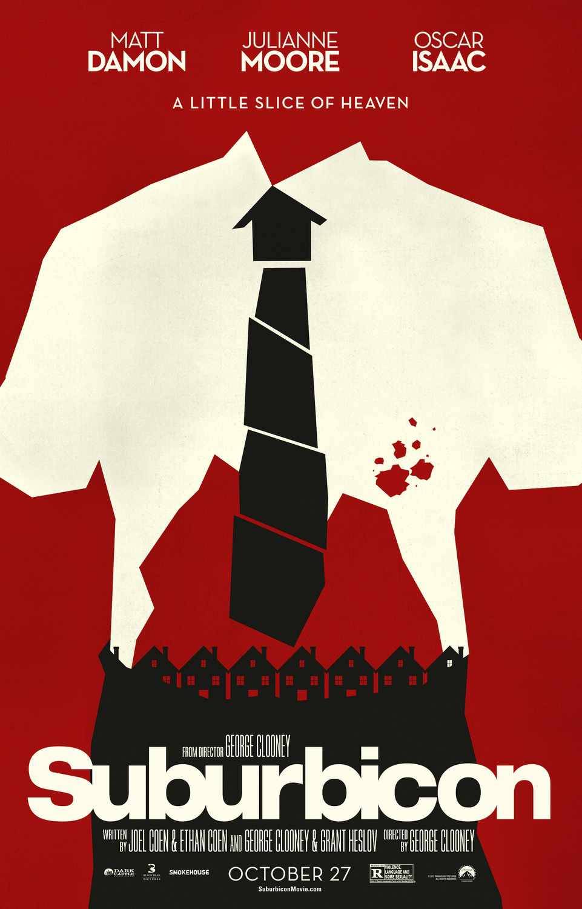

Fiche technique

Synopsis
Suburbicon, 1959 : un lotissement-vitrine vendu sur brochure — pelouses, facteurs souriants, voisins choisis. Deux événements simultanés fissurent le décor. D'un côté, la famille Mayers, première famille noire du quartier, emménage — et voit aussitôt la banlieue « idéale » s'organiser contre elle, du murmure des comités de quartier à l'émeute nocturne[1].
De l'autre, chez les Lodge, un cambriolage nocturne tourne au drame : Rose, l'épouse en fauteuil roulant, meurt sous le chloroforme. Très vite, son fils Nicky comprend que le père, Gardner, et la sœur jumelle de la morte, Margaret, sont moins victimes qu'organisateurs — l'assurance-vie, un amant de bureau et deux tueurs à gages composant le vrai plan de cette famille modèle. Pendant que Suburbicon hurle contre ses nouveaux voisins noirs, le crime blanc prospère, pavillon contre pavillon[1][2].
Contexte de production
Le film est la soudure de deux scénarios sans rapport. Le premier est un script de série noire écrit par Joel et Ethan Coen dès 1986, juste après Blood Simple, resté trente ans dans un tiroir ; Clooney annonçait déjà vouloir le tourner en 2005. Le second est un projet historique de Clooney et Grant Heslov sur la famille Myers — premiers habitants noirs de Levittown (Pennsylvanie) en 1957, accueillis par des semaines de harcèlement organisé[1]. Clooney et Heslov ont greffé ce fait divers réel sur l'intrigue criminelle des Coen pour donner au film son « aspect plus engagé et politique »[2].
Tourné à Fullerton, en Californie, à l'automne 2016 — en pleine élection américaine, ce qui n'est pas un détail pour un film sur la rage blanche périurbaine — avec une équipe de luxe : Robert Elswit à l'image, Alexandre Desplat à la partition, Matt Damon et Julianne Moore en tête d'affiche. Josh Brolin, un temps au générique, disparaît au montage[1].
Structure narrative
Le film entrelace ses deux intrigues en un montage-parallèle moral : chaque progrès du complot des Lodge répond à une escalade du siège des Mayers. La mise en parallèle est le argument même du film — pendant que le quartier entier surveille, insulte et assiège la seule famille innocente du lotissement, personne ne regarde la maison d'en face où l'on assassine réellement[2]. L'ouverture donne le ton : un faux film publicitaire des années 1950 vante « Suburbicon » sur papier glacé, avant que le récit ne retourne la brochure[2].
Le point de vue bascule progressivement vers Nicky, l'enfant : c'est par ses yeux que les mensonges des adultes se découvrent, et par sa fenêtre que se noue l'amitié muette avec le fils Mayers, seul contrechamp humain du film — deux garçons qui se lancent une balle par-dessus la clôture pendant que leurs mondes respectifs brûlent[2].
Mise en scène et procédés techniques
Clooney construit son langage autour du regard : regards voyeuristes et collectifs des voisins qui s'agglutinent, regard de l'enfant qui perce les mensonges, jusqu'à la séquence d'identification au commissariat que Le Rayon Vert décompose en « six niveaux » de regards entrecroisés — la mise en scène y remplace intégralement le dialogue[2]. La photographie de Robert Elswit pousse les pastels publicitaires jusqu'à l'écœurement, et Desplat signe une partition faussement hitchcockienne qui prend la banlieue au sérieux comme décor de film noir.
L'ADN coenien reste lisible — tueurs à gages pieds nickelés, assureur soupçonneux (Oscar Isaac, deux scènes et le meilleur du film), engrenage criminel qui broie ses auteurs — mais filmé avec une frontalité satirique qui est celle de Clooney plutôt que l'ironie entomologiste des frères[2][3]. C'est précisément cette coexistence de deux régimes — farce noire et chronique du lynchage social — que la critique lui reprochera[3].
Personnages principaux
Gardner Lodge (Matt Damon) est l'homme moyen coenien porté à l'incandescence : cadre gris, nuque raide, capable de pédaler en costume sur un vélo d'enfant après un double meurtre — l'Amérique respectable comme imposture criminelle. Margaret (Julianne Moore, en double rôle spectral : la femme morte et sa jumelle teinte en blond) incarne le rêve de conformité poussé jusqu'au meurtre — devenir « la femme d'intérieur » de la brochure, quel qu'en soit le prix.
Nicky (Noah Jupe) est la conscience du film, enfant à hauteur duquel la banlieue révèle sa vraie nature. Quant aux Mayers, leur dignité silencieuse — la mère qui fait ses courses sous les insultes au supermarché, le père qui tond sa pelouse pendant l'émeute — constitue le contrepoint moral du récit ; la critique, française comme américaine, a toutefois régulièrement pointé que le film les maintient en périphérie de leur propre histoire, sous-exploitant le fil Levittown qu'il avait lui-même convoqué[3][4].
Thèmes
Le thème matriciel est l'hypocrisie de la banlieue blanche des années Eisenhower : un paradis contractuel dont la promesse — sécurité, homogénéité, bonheur sur brochure — repose sur l'exclusion. Le film démonte le mythe en le prenant au mot : « cette belle façade vole en éclats » à l'arrivée des premiers habitants noirs, révélant que le racisme ordinaire n'est pas un accident du décor mais son principe de construction[2].
Le second thème est le bouc émissaire : Suburbicon a besoin des Mayers pour ne pas se voir. Toute la violence sociale converge vers la seule maison innocente, pendant que la criminalité réelle — blanche, assurée, en col propre — passe inaperçue ; les voisins transformés en « sauvages hystériques » croient que le mal est arrivé avec le déménagement, quand il habitait le lotissement depuis l'origine[4]. Enfin, le film oppose aux adultes le regard des enfants : la balle échangée par-dessus la clôture est sa seule utopie — modeste, presque muette, mais c'est la question que pose in fine son analyse la plus généreuse : « si un regard peut entraîner la haine, peut-il aussi faire naître l'amour ? »[2]
Réception critique et postérité
L'accueil fut rude — le plus mauvais de la carrière de réalisateur de Clooney. Présenté à Venise en 2017, le film sort en octobre aux États-Unis : 2,8 millions de dollars au premier week-end, 12,8 millions dans le monde pour 25 de budget, un « D− » CinemaScore décerné par le public, 27 % sur Rotten Tomatoes[1]. Le consensus critique résume le procès :
« Un raté décevant pour George Clooney : Suburbicon tente de jongler entre satire sociale, commentaire racial et intrigue criminelle — et finit par gâcher les trois. » Consensus Rotten Tomatoes, cité par Wikipédia[1]
La critique française fut plus partagée : sévère sur l'hésitation du film entre ses deux sujets (« choisissant le moins intéressant des deux »[3]), mais sensible, chez certains, à la « fable amère et macabre, totalement folle et déglinguée » et à l'intelligence du pamphlet[4] — Le Rayon Vert allant jusqu'à défendre la cohérence de sa mise en scène du regard[2]. Avec le recul, le film gagne à être revu pour ce qu'il est : un document sur l'Amérique de 2016 déguisé en carte postale de 1959.
Conclusion
Bienvenue à Suburbicon est un film-cicatrice : la soudure entre le scénario coenien de 1986 et le dossier Levittown reste visible à l'œil nu, et c'est cette couture que la critique a — non sans raison — désignée comme sa faiblesse. Mais la couture est aussi son idée la plus forte : en refusant de fondre ses deux récits, le film montre littéralement que l'Amérique blanche et l'Amérique noire vivent deux histoires parallèles dans le même décor, séparées par une clôture de jardin.
Ni le meilleur Coen (ils ne l'ont pas tourné) ni le meilleur Clooney (il l'a trop chargé), Suburbicon reste un objet plus intéressant que sa réputation : une satire qui rate sa cible principale mais en touche une autre, plus durable — le mécanisme par lequel une communauté choisit son monstre pour s'épargner son miroir. La brochure promettait « des maisons pour des familles heureuses » ; le film livre l'inventaire après sinistre, et c'est un document qui vieillit mieux que son accueil.
Sources
- Wikipédia (en) — « Suburbicon » : historique des deux scénarios (Coen 1986, Myers/Levittown 1957), équipe, tournage, budget et box-office, réception chiffrée (Rotten Tomatoes, Metacritic, CinemaScore). en.wikipedia.org/wiki/Suburbicon
- Le Rayon Vert — « Bienvenue à Suburbicon de George Clooney : Analyse » : structure duelle Lodge/Mayers, mise en scène du regard (séquence du commissariat), ouverture publicitaire, lecture politique et humaniste. rayonvertcinema.org
- LeMagduCine — « Bienvenue à Suburbicon, malaise de banlieue » (et critiques françaises associées consultées via recherche web) : hésitation entre les deux sujets, sous-exploitation du fil Mayers. lemagducine.fr
- Mondociné — « Bienvenue à Suburbicon : la critique du film » (consultée via recherche web) : « fable amère et macabre », satire des préjugés, voisins en « sauvages hystériques ». mondocine.net